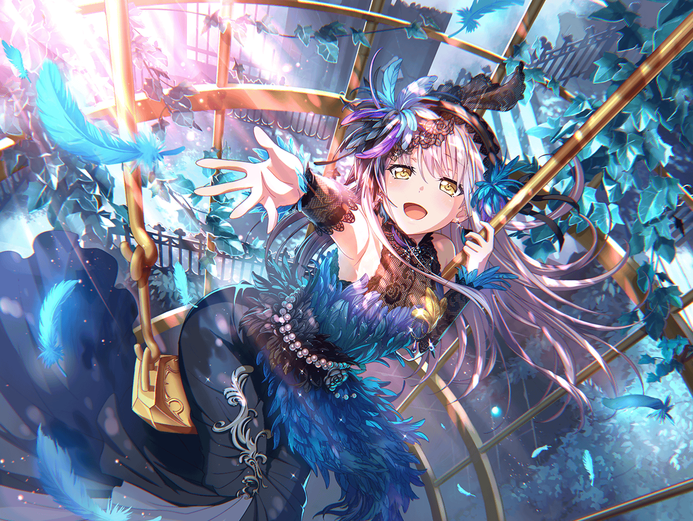

友希那
このスコアも、かなり使い込んだわね。
書き込みもたくさんしたし……
友希那
きれいなページなんて、どこにも見当たらないわ
友希那
あら？ {{userName}}さん。お疲れ様。
休憩中かしら
友希那
ええ、スコアを見ていたの。
このスコアは、この前のライブで歌った曲のものよ。
かなり読み込んだからもうボロボロね
友希那
この曲は……かつて私の父が歌っていたものなの
友希那
父の昔のテープレコーダーを見つけて
初めてこの曲を聴いた時、とても衝撃を受けたわ
友希那
激しく、心を揺さぶられる感覚……
聴き終わって、しばらく動けなかった……
友希那
こんな曲があるなんて、って……
友希那
私もこの曲を歌いたい。
こんな風に心揺さぶる音楽を……
友希那
……この曲を歌う、父のように。
そう、思ったのだけど……
友希那
私にこの歌が歌えるかどうか、不安だったの。
この曲に求められるスキルは相当高いものが必要よ。
……でも、それだけじゃない
友希那
私に……この歌を歌う資格があるのか。
それがわからなかった
友希那
この曲から感じられる純粋で、ひたむきな音楽への情熱……
それを、私が歌っていいの？
友希那
そんな不安に想い悩まされたわ
友希那
それでも歌うことを決めたのは……
大切な人たちからの言葉……それが理由かしら
友希那
この曲と向き合おうとしている気持ちは、音楽に対して
純粋だからだと、そう言ってくれた
友希那
完成されていなきゃ演奏できない音楽なんて存在しない、と……
そんな風にも言ってくれた
友希那
……だから、私は決めたのよ。
今の自分に足りないものがあって、未完成だったとしても
あの曲を歌いたいと
友希那
ええ。おかげで私は前を向いて歌えるようになった。
後ろめたい気持ちが完全に消えたわけではないわ。でも……
友希那
自分のそういう部分からも目をそらさない。
それが今の私がやるべきことなのだと感じたから
友希那
この曲のおかげで、私は、少しだけ前に進むことができた。
バンドとしても、演奏技術の大きな向上につながったわ
友希那
そういう意味でも、この曲との出会いには感謝しているの。
……いえ、この曲だけじゃないわ
友希那
Roseliaのメンバーにも、感謝している
友希那
完成度をあげる為に何度も何度も練習した。
遅くまで残って……
友希那
あの曲はメンバーがいなければ本当の意味で完成は
しなかった
友希那
……そうね。以前の私であればこの考えにはいたらなかった
友希那
音楽を……歌うことで、私は成長している。
技術だけじゃない、精神的な強さを手にすることができた
友希那
不思議ね、音楽って……
人の考え方すら変えてしまうなんて
友希那
以前に比べて笑顔が増えた？
……ふふ。そうかもしれないわね
友希那
これも音楽の力？ そうね。それから……
『大切な人たち』の力、だわ
友希那
少し、私らしくない発言だったかしら。
ごめんなさい、長く話しこんでしまったわね
友希那
{{userName}}さん。私は……Roseliaはもっともっと
上へいける。そう確信した
友希那
上へたどり着いた時に、私は音楽をどんなものとして
とらえているか――
友希那
音楽と、どんな風に向き合えているか。
それが今から楽しみで仕方ない
友希那
私が感じたもの……それを歌にして
あなたにも届けたいと思っている
友希那
どうか、楽しみにしていて